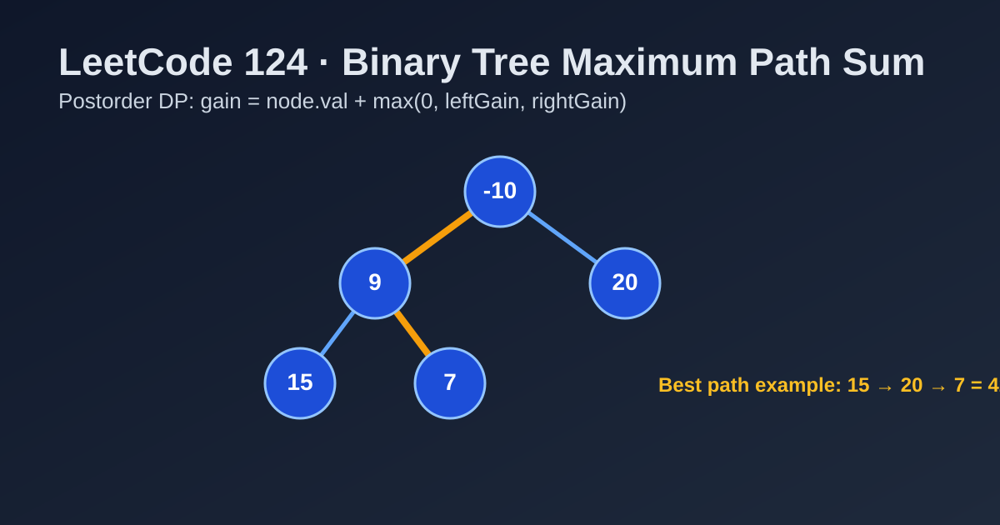

LeetCode 124: Binary Tree Maximum Path Sum (Postorder DP)
LeetCode 124Binary TreeDPDFSToday we solve LeetCode 124 - Binary Tree Maximum Path Sum.
Source: https://leetcode.com/problems/binary-tree-maximum-path-sum/

English
Problem Summary
Given a non-empty binary tree, return the maximum path sum. A path can start and end at any nodes, but it must follow parent-child connections and contain at least one node.
Key Insight
Use postorder DFS + dynamic programming. For each node, compute:
gain(node) = node.val + max(0, gain(left), gain(right))
This is the best single-branch contribution to parent. At the same time, update global answer with a “turning path” through current node:
node.val + max(0, gain(left)) + max(0, gain(right)).
Brute Force and Why Insufficient
Brute force enumerating all possible paths is expensive (superlinear to exponential depending on representation). We only need one DFS pass.
Optimal Algorithm (Step-by-Step)
1) Initialize global ans = -∞.
2) DFS left and right to get gains.
3) Clamp negative gains to 0 (ignore harmful branches).
4) Update ans with node + leftGain + rightGain.
5) Return node + max(leftGain, rightGain) to parent.
Complexity Analysis
Time: O(n), each node visited once.
Space: O(h) recursion stack, where h is tree height (worst-case O(n)).
Common Pitfalls
- Returning both branches to parent (invalid; parent can only extend one branch).
- Forgetting to keep global answer for turning paths.
- Not handling all-negative trees (must start answer from -∞ or root value).
- Treating it like root-to-leaf path problem (this one is any-node to any-node).
Reference Implementations (Java / Go / C++ / Python / JavaScript)
class Solution {
private int ans = Integer.MIN_VALUE;
public int maxPathSum(TreeNode root) {
dfs(root);
return ans;
}
private int dfs(TreeNode node) {
if (node == null) return 0;
int leftGain = Math.max(0, dfs(node.left));
int rightGain = Math.max(0, dfs(node.right));
ans = Math.max(ans, node.val + leftGain + rightGain);
return node.val + Math.max(leftGain, rightGain);
}
}func maxPathSum(root *TreeNode) int {
ans := math.MinInt
var dfs func(*TreeNode) int
dfs = func(node *TreeNode) int {
if node == nil {
return 0
}
leftGain := max(0, dfs(node.Left))
rightGain := max(0, dfs(node.Right))
ans = max(ans, node.Val+leftGain+rightGain)
return node.Val + max(leftGain, rightGain)
}
dfs(root)
return ans
}class Solution {
public:
int ans = INT_MIN;
int dfs(TreeNode* node) {
if (!node) return 0;
int leftGain = max(0, dfs(node->left));
int rightGain = max(0, dfs(node->right));
ans = max(ans, node->val + leftGain + rightGain);
return node->val + max(leftGain, rightGain);
}
int maxPathSum(TreeNode* root) {
dfs(root);
return ans;
}
};class Solution:
def maxPathSum(self, root: Optional[TreeNode]) -> int:
self.ans = float('-inf')
def dfs(node):
if not node:
return 0
left_gain = max(0, dfs(node.left))
right_gain = max(0, dfs(node.right))
self.ans = max(self.ans, node.val + left_gain + right_gain)
return node.val + max(left_gain, right_gain)
dfs(root)
return self.ansvar maxPathSum = function(root) {
let ans = -Infinity;
const dfs = (node) => {
if (!node) return 0;
const leftGain = Math.max(0, dfs(node.left));
const rightGain = Math.max(0, dfs(node.right));
ans = Math.max(ans, node.val + leftGain + rightGain);
return node.val + Math.max(leftGain, rightGain);
};
dfs(root);
return ans;
};中文
题目概述
给定一棵非空二叉树，返回最大路径和。路径可以从任意节点开始、到任意节点结束，但必须沿着父子连接，且至少包含一个节点。
核心思路
使用后序 DFS + 动态规划。对每个节点计算“向上贡献值”：
gain(node) = node.val + max(0, gain(left), gain(right))
同时用“拐点路径”更新全局最大值：
node.val + max(0, gain(left)) + max(0, gain(right))。
暴力解法与不足
暴力法枚举所有路径，成本很高（可达超线性甚至指数级）。本题一次 DFS 即可解决。
最优算法（步骤）
1）初始化全局答案 ans = -∞。
2）后序遍历左右子树获取贡献值。
3）负贡献置 0（坏分支不选）。
4）用 node + leftGain + rightGain 更新全局答案。
5）向父节点返回 node + max(leftGain, rightGain)。
复杂度分析
时间复杂度：O(n)，每个节点访问一次。
空间复杂度：O(h)，递归栈深度，最坏 O(n)。
常见陷阱
- 把左右两支都返回给父节点（不合法，父节点路径只能接一支）。
- 忘记维护“拐点路径”的全局答案。
- 未处理全负数树（答案初始化必须足够小）。
- 误当成“从根到叶”的路径题（本题是任意点到任意点）。
多语言参考实现（Java / Go / C++ / Python / JavaScript）
class Solution {
private int ans = Integer.MIN_VALUE;
public int maxPathSum(TreeNode root) {
dfs(root);
return ans;
}
private int dfs(TreeNode node) {
if (node == null) return 0;
int leftGain = Math.max(0, dfs(node.left));
int rightGain = Math.max(0, dfs(node.right));
ans = Math.max(ans, node.val + leftGain + rightGain);
return node.val + Math.max(leftGain, rightGain);
}
}func maxPathSum(root *TreeNode) int {
ans := math.MinInt
var dfs func(*TreeNode) int
dfs = func(node *TreeNode) int {
if node == nil {
return 0
}
leftGain := max(0, dfs(node.Left))
rightGain := max(0, dfs(node.Right))
ans = max(ans, node.Val+leftGain+rightGain)
return node.Val + max(leftGain, rightGain)
}
dfs(root)
return ans
}class Solution {
public:
int ans = INT_MIN;
int dfs(TreeNode* node) {
if (!node) return 0;
int leftGain = max(0, dfs(node->left));
int rightGain = max(0, dfs(node->right));
ans = max(ans, node->val + leftGain + rightGain);
return node->val + max(leftGain, rightGain);
}
int maxPathSum(TreeNode* root) {
dfs(root);
return ans;
}
};class Solution:
def maxPathSum(self, root: Optional[TreeNode]) -> int:
self.ans = float('-inf')
def dfs(node):
if not node:
return 0
left_gain = max(0, dfs(node.left))
right_gain = max(0, dfs(node.right))
self.ans = max(self.ans, node.val + left_gain + right_gain)
return node.val + max(left_gain, right_gain)
dfs(root)
return self.ansvar maxPathSum = function(root) {
let ans = -Infinity;
const dfs = (node) => {
if (!node) return 0;
const leftGain = Math.max(0, dfs(node.left));
const rightGain = Math.max(0, dfs(node.right));
ans = Math.max(ans, node.val + leftGain + rightGain);
return node.val + Math.max(leftGain, rightGain);
};
dfs(root);
return ans;
};
Comments